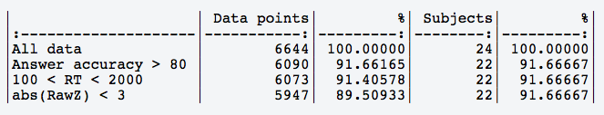
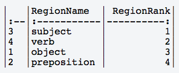
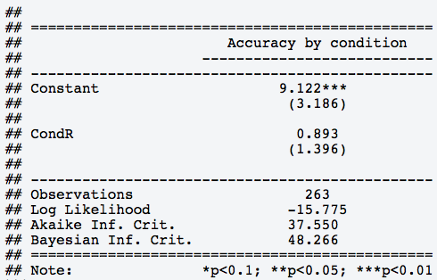
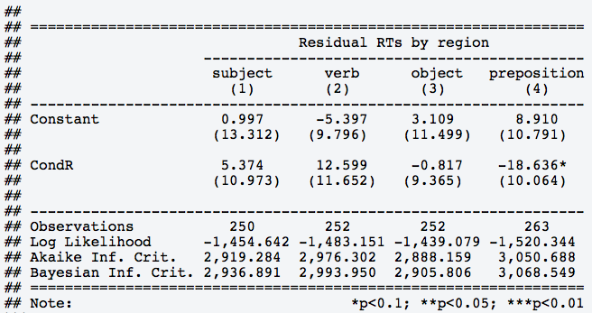
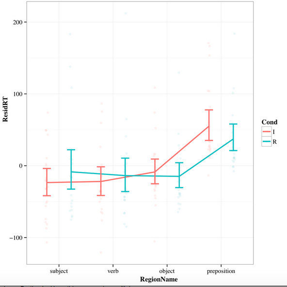

This guide will help you understand the SPR report you received with your data. The report outlines what we did to clean up the data and how much data was excluded in the process of cleaning, a calculation of the mean question accuracy from your experiment, an analysis of the accuracy by condition to see if some of your conditions had different accuracy as compared to others, and finally an analysis of the residual reading times for each region of interest.
The raw reading data has been cleaned with the following steps: * Participants were removed for having question accuracy lower than 80% * Reading times were removed if the reading times were shorter than 100 msec or longer than 2000 msec * Reading times were removed if they were 3 standard deviations away from the mean.
This is summary of exclusions.

[1] "Ordering regions as:"

The mean question accuracy was 95.690547.
The following table shows accuracy by condition.
Significance markers means that condition has a different
accuracy as compared to the baseline condition.

Reading times were residualized by word length and participant.
A model was fit analyzing residual reading times based on condition.
This table is a summary of each model. Significance markers means that
residual RTs differ for specific conditions as compared to the baseline
condition.


Exclusions We always clean our data to remove points that might not be valid. The first thing we do is remove participants who have a low question accuracy because that suggests that particular participant was not paying attention and their data is likely not valid. Second we eliminate reading times that are less than 100 msec, which is unrealistically short and likely means the participant didn't read the word (either by accidental button press or on purpose). We also eliminate reading times that are greater than 2000 msec (2 seconds) as those are too long. Finally we eliminate reading times that fall 3 standard deviations away from the mean. When we report data we must always report these steps as well as how much data is lost at each step.
Region Ordering We rank ordered the region if possible so that their order is equivalent to positions in the sentence. If it was not possible to rank order the regions (either because orders differed across items) your report will say so and the regions will show up in a more or less random order. Make sure to pay attention to this when you interpret your findings.
Accuracy We first report overall accuracy for both items and fillers. We then remove the fillers and look at accuracy for the items alone and specifically we look to see if there is a difference in accuracy across our conditions. Typically we do not want there to be differences across conditions and if there are differences we need to report them.
Accuracy by condition report We test for significant differences in accuracy by running a logistic Mixed Effects regression. We test for effects of condition on accuracy. There are multiple ways to do this and for simplicity we do this by setting one of your conditions as the baseline (labeled Constant) and seeing if each condition is different from that baseline (this is referred to as treatment or dummy coding). This does not mean you will be able to know if two non-baseline conditions differ from each other so interpret the report carefully.
In the example above we see that the baseline condition has a significant effect (note the little *'s). This means that accuracy for the baseline condition was greater than 0 with p < 0.001. The next row shows that Condition R does not have a significant effect (note that there are no *'s), meaning there is no difference in accuracy between the baseline and Condition R. That is, both conditions had the same overall accuracy.
Residual Reading times The first step to analyzing reading times is to remove effects for word length. That is, we normalize the time it took to read the word for the length of the word. This process is called residualization. After that we calculate the mean reading time for each region instead of analyzing each word within a region individually. Then we center the reading times (subtract the mean reading time from all values). Finally we test for effects of Condition on residual reading times for each region using a mixed effects linear regression model.
In the example above there are four regions. We were able to order the regions based on how they appeared in the sentence. As above we first see if the baseline condition had an effect (labeled Constant). We see no difference in residual RTs for any of the regions. Since our residual RTs were centered that means in none of the regions did the residual RT in the baseline condition differ from the mean residual RT of that region.
On the next row we see one significant effect, the reading times for the preposition region differed for sentences in condition R. There is a negative effect meaning that residual RTs in condition R were shorter than in the baseline condition.
For at least some groups there were regions that had little data. Our analyses can only work with a certain amount of data and if that criteria is not met than region analysis is not reported. Make sure to pay attention to whether all your regions are reported and if not be aware it is because we could not conduct analyses on those missing regions (and hence we can't draw any conclusions about them).
The plot We include a plot for each group. Regions are ordered left to right (if we could order your regions). For each region the residual RTs for each condition is shown. We present the by-participant and by-condition aggregated data, meaning we plot the average residual RTs for each participant for each condition. We do this as it better approximates how we analyze the data (though not completely, more on that below). These participant aggregate residual reading times are plotted as faint dots on the plot. We also show error bars that represent 95% confidence intervals (CIs). Finally we plot lines that connect the mean residual RTs for each group (if we couldn't order your regions we didn't add lines).
Plotting our data gives us a different way to understand what is happening compared to the analyses in the report. From the plot we can see that residual RTs on the preposition region are generally longer than the other regions. Though, we would want to do an analysis to see if that was a statistically significant effect.
Our analyses showed that residual RTs differed between the conditions on the preposition region. Specifically the results suggested that residual RTs for Condition R were shorter than in the other condition. Looking at the plot we can see that the residual RTs for Condition R are shorter. While the CIs overlap on the plot (which would normally suggest a non-significant difference) our analyses confirm that the two conditions do differ. Why the plot suggests a slightly different result is partly due to our aggregation of the data by-participant and condition. Our analyses control for individual differences between participants and items by estimating differences them rather than controlling for these differences by averaging them out. This allows for more powerful testing and hence why we might we can find significant statistical differences despite somewhat weak visualized differences (see this wiki page for more info about this). The upshot of this is you need to both look at your data and your analyses to get a complete picture of your results.
1. What is the answer to this question?
2. What is the answer to this question?
3. What is the answer to this question?
4. What is the answer to this question?
5. What is the answer to this question?
6. What is the answer to this question?
7. What is the answer to this question?
8. What is the answer to this question?
9. What is the answer to this question?
10. What is the answer to this question?